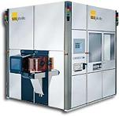

Optical
Lithography
The
fabrication of circuits on a wafer requires a process by which specific
patterns of various materials can be deposited on or removed from the
wafer's surface. The process of defining these patterns on the
wafer is known as
lithography.
Lithography uses
photoresist
materials to cover areas on
the wafer that will not be subjected to material deposition or removal.
Optical
Lithography
refers to a
lithographic process that uses visible or ultraviolet light to form
patterns on the photoresist through printing.
Printing
is the process of projecting the image of the patterns onto the wafer
surface using a light source and a photo mask. There are three
types of printing - contact, proximity, and projection printing, each of
which will be described below. Equipment used for printing are
known as
printers
or
aligners.
Patterned
masks, usually composed of glass or chromium, are used during printing to cover areas of
the photoresist layer that shouldn't get exposed to light.
Development of the photoresist in a developer solution after its
exposure to light produces a resist pattern on the wafer, which defines
which areas of the wafer are exposed for material deposition or removal.
|
 |
|
Figure 1.
Example of a mask aligner from Suss; source:
www.suss.com |
There are two types of photoresist
material, namely, negative and positive photoresist.
Negative
resists
are those that become less soluble in the developer solution when exposed to
light, forming negative images of the mask patterns on the wafer. On the
other hand,
positive resists
are those
that become more soluble in the developer when exposed to light, forming
positive images of the mask patterns on the wafer.
Commercial
negative photoresists normally consist of two parts: 1) a chemically
inert
polyisoprene
rubber;
and 2) a
photoactive
agent. When exposed to light, the photoactive agent reacts with the
rubber, promoting
cross-linking
between the rubber molecules that make them less soluble in the
developer. Such cross-linking is inhibited by oxygen, so this
light exposure process is usually done in a nitrogen atmosphere.
Positive
resists also have two major components: 1) a
resin;
and 2) a
photoactive
compound dissolved in a solvent. The photoactive compound in its
initial state is an inhibitor of dissolution. Once this
photoactive
dissolution
inhibitor
is destroyed by light, however, the resin becomes soluble in the
developer.
A
disadvantage of negative resists is the fact that their exposed portions swell as
their unexposed areas are dissolved by the developer. This
swelling,
which is simply volume increase due to the penetration of the developer
solution into the resist material, results in
distortions
in the pattern features.
This swelling
phenomenon
limits
the
resolution
of negative resist processes. The unexposed regions of positive resists
do not exhibit swelling and distortions to the same extent as the
exposed regions of negative resists. This allows positive resists to
attain better image resolution.
Contact
printing
refers to the light exposure process wherein the photomask is
pressed
against the resist-covered wafer with a certain degree of pressure. This
pressure is typically in the range of 0.05-0.3 atmospheres. Light
with a wavelength of about 400 nm is used in contact printing.
Contact
printing is capable of attaining resolutions of less than 1 micron.
However, the presence of contact between the mask and the resist
somewhat diminishes the uniformity of attainable resolution across the
wafer. To alleviate this problem,
masks
used in contact printing must be
thin
and
flexible
to allow better contact over the whole wafer.
Contact
printing also results in defects in both the masks used and the wafers,
necessitating the regular disposal of masks (whether thick or thin)
after a certain level of use.
Mask defects
include pinholes, scratches, intrusions, and star fractures.
Despite these
drawbacks, however, contact printing continues to be widely used. After
all, good contact printing processes can achieve resolutions of 0.25
micron or better.
Proximity printing
is another
optical lithography technique. As its name implies, it involves
no
contact
between the mask and the wafer, which is why masks used with this
technique have longer useful lives than those used in contact printing.
During proximity printing, the mask is usually only 20-50 microns away
from the wafer.
The
resolution
achieved by proximity printing is
not as good
as that of contact printing. This is due to the diffraction of light
caused by its passing through slits that make up the pattern in the
mask, and traversal across the gap between the mask and the wafer.
This type of
diffraction is known as
Fresnel
diffraction, or near-field diffraction, since it results from a
small gap
between the mask and the wafer. Proximity printing resolution may
be improved by diminishing the gap between the mask and the wafer and by
using light of shorter wavelengths.
Projection printing
is the third technique used in optical lithography. It also
involves no contact between the mask and the wafer. In fact, this
technique employs a
large gap
between the mask and the wafer, such that Fresnel diffraction is no
longer involved. Instead, far-field diffraction is in effect under this
technique, which is also known as
Fraunhofer
diffraction.
Projection
printing is the technique employed by most modern optical lithography
equipment. Projection printers use a well-designed objective
lens
between the mask and the wafer, which collects diffracted light from the
mask and projects it onto the wafer. The capability of a lens to collect
diffracted light and project this onto the wafer is measured by its
numerical aperture
(NA). The NA values of lenses used in projection printers
typically range from 0.16 to 0.40.
The
resolution achieved by projection printers depends on the wavelength and
coherence of the incident light and the NA of the lens. The
resolution achievable by a lens is governed by
Rayleigh's
criterion,
which defines the minimum distance between two images for them to be
resolvable. Thus, for any given value of NA, there exists a
minimum resolvable dimension.
Using a lens
with a higher NA will result in better resolution of the image, but this
advantage has a price. The
depth of
focus
of a lens is inversely proportional to the square of the NA, so
improving the resolution by increasing the NA reduces the depth of focus
of the system. Poor depth of focus will cause some points of the
wafer to be out of focus, since no wafer surface is perfectly flat.
Thus, proper design of any aligner used in projection printing considers
the
compromise
between resolution and depth of focus.
See
also: Electron
Beam Lithography;
Masks
and Reticles;
Lithography/Etch;
IC Manufacturing
HOME
Copyright
© 2004
www.EESemi.com.
All Rights Reserved.